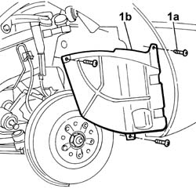

7055B42 FRONT WHEEL ARCH LINER (one), left or right - R.R.
- Path
- Procedures > 70 FITTINGS > 7055 MOULDINGS ON PROTECTIONS > 7055B EXTERIOR PROTECTION > 7055B42 FRONT WHEEL ARCH LINER (one), left or right - R.R.
- Kind
- repair procedure (removal / refitting; the operation number is the code)
- Applies to
- all engines; all production periods
- Interactive page
- https://sloeber94.github.io/elrnDB-lThss/en/#/80726
Applies to: all engines; all production periods
 Removing
Removing
 Refitting
Refitting- Position the vehicle on a lift.
See in Op. 4450B04 Right FRONT WHEEL (one) - R.R.
-
1. Undo the fixing bolts (1a) and remove the wheel arch liner (1b) from the housing.

Applies to: all engines; all production periods
Refitting
Removing- Place the wheel arch liner in position and secure it using the bolts.
See in Op. 4450B04 Right FRONT WHEEL (one) - R.R.
-
- Remove the vehicle from the lift.
Topics linked from this page (1)
Topics that link to this page (150)
- T26 WIND NOISE IN FRONT AREA
- 1004B10 POWER UNIT with manual gearbox - R.R.
- 1004B17 POWER UNIT with automatic transmission, complete with support frame, front suspension- R.R. for versions with air conditioning
- 1004B10 POWER UNIT with manual gearbox - R.R.
- 1004B18 POWER UNIT with manual gearbox, with front suspension subframe - R.R.
- 1008A44 RIGID REAR power unit MOUNTING - R.R.
- 1008A46 Power unit RIGID MOUNT - TIMING side - R&R
- 1008B10 FLEXIBLE MOUNTING for power unit front support (timing side) - Replace
- 1008B20 Power unit rear support FLEXIBLE MOUNTING - Replace
- 1008A43 Power unit RIGID MOUNT - AUTOMATIC GEARBOX side - R&R
- 1008A44 RIGID REAR power unit MOUNTING - R.R.
- 1008A46 Power unit RIGID MOUNT - TIMING side - R&R
- 1008B10 FLEXIBLE MOUNTING for power unit front support (timing side) - Replace
- 1008B20 Power unit rear support FLEXIBLE MOUNTING - Replace
- 1008C14 BRACKET ON ENGINE FOR REACTION ROD
- 1008A44 RIGID REAR power unit MOUNTING - R.R.
- 1008A46 Power unit RIGID MOUNT - TIMING side - R&R
- 1008B10 FLEXIBLE MOUNTING for power unit front support (timing side) - Replace
- 1008B20 Power unit rear support FLEXIBLE MOUNTING - Replace
- 1016C10 SINGLE CYLINDER HEAD - R.R. and Replace gasket
- 1016A30 Left TAPPET COVER - R.R. and Replace gasket
- 1016A36 Left and right TAPPET COVERS - R.R.
- 1016C10 SINGLE CYLINDER HEAD - R.R. and Replace gasket
- 1016D20 LEFT CYLINDER HEAD - R.R. and replace gasket
- 1016D24 RIGHT CYLINDER HEAD - REMOVING-REFITTING AND REPLACING GASKET
- 1016B10 SINGLE CAMSHAFT HOUSING - REPLACE gasket
- 1016C10 SINGLE CYLINDER HEAD - R.R. and Replace gasket
- 1020A20 CRANKCASE SUMP - R.R. clean contact surfaces and apply sealant
- 1020D08 FRONT crankshaft oil seal COVER - R.R. and replace seals with timing belt(s) removed for versions with automatic transmission
- 1020D12 Crankshaft oil seal FRONT COVER - R.R. and Replace seals
- 1020D18 Front crankshaft COVER OIL SEAL - Replace
- 1020D26 Flywheel side oil seal COVER - R.R. and Replace seals
- 1020D39 Flywheel side OIL SEAL - Replace for versions with automatic transmission
- 1020D18 Front crankshaft COVER OIL SEAL - Replace
- 1020A20 CRANKCASE SUMP - R.R. clean contact surfaces and apply sealant
- 1020D12 Crankshaft oil seal FRONT COVER - R.R. and Replace seals
- 1020D18 Front crankshaft COVER OIL SEAL - Replace
- 1024B20 ENGINE FLYWHEEL - R&R for versions with automatic transmission
- 1028H10 CONNECTING ROD and PISTON SET - R&R
- 1032B10 TOOTHED timing BELT - R.R. for timing adjustment or replacement
- 1032B46 TOOTHED DRIVE PULLEY/S - R.R.
- 1032B52 TOOTHED DRIVEN PULLEY (one) - R.R.
- 1032B60 TOOTHED DRIVEN PULLEY - R.R.
- 1032C18 Timing belt MOVING TENSIONER - R.R.
- 1032C32 TIMING BELT FIXED TENSIONER - R.R.
- 1032D12 Timing system protective COVER(S) - R.R.
- 1032B10 TOOTHED timing BELT - R.R. for timing adjustment or replacement
- 1032B46 TOOTHED DRIVE PULLEY/S - R.R.
- 1032B52 TOOTHED DRIVEN PULLEY (one) - R.R.
- 1032B60 TOOTHED DRIVEN PULLEY - R.R.
- 1032C18 Timing belt MOVING TENSIONER - R.R.
- 1032C32 TIMING BELT FIXED TENSIONER - R.R.
- 1032D12 Timing system protective COVER(S) - R.R.
- 1032B10 TOOTHED timing BELT - R.R. for timing adjustment or replacement
- 1032B46 TOOTHED DRIVE PULLEY/S - R.R.
- 1032B52 TOOTHED DRIVEN PULLEY (one) - R.R.
- 1032B55 LEFT HEAD TOOTHED DRIVEN PULLIES - R.R. FOR VERSIONS WITH AIR CONDITIONING
- 1032B58 DRIVEN TOOTHED PULLIES
- 1032C18 Timing belt MOVING TENSIONER - R.R.
- 1032C32 TIMING BELT FIXED TENSIONER - R.R.
- 1032D12 Timing system protective COVER(S) - R.R.
- 1036L10 CAMSHAFTS in camshaft housing RR includes camshaft housing replacement.
- 1036L30 FRONT OIL SEAL for camshaft housing camshaft - REPLACE
- 1036C10 CAMSHAFTS in cylinder head - R.R.
- 1036C39 timing variator on cylinder head intake camshaft - r r
- 1036E10 CAMSHAFTS in left cylinder head - R.R. on vehicle
- 1036E15 Right cylinder head CAMSHAFTS - R.R. on vehicle for versions with air conditioning
- 1036E54 OIL SEALS FOR LEFT CYLINDER HEAD CAMSHAFTS - REPLACE
- 1036E58 OIL SEALS FOR RIGHT CYLINDER HEAD CAMSHAFTS - REPLACE
- 1036H58 HYDRAULIC TAPPETS (all) - R.R. - Includes R.R. camshaft
- 1036B10 CAMSHAFT in cylinder head - R.R. on vehicle
- 1048B14 air delivery pipe between turbo charger and heat exchanger - replace
- 1048B20 Air supply HOSE from heat exchanger to rigid pipe -Replace
- 1048B50 Air/air HEAT EXCHANGER - R.R.
- 1048B14 air delivery pipe between turbo charger and heat exchanger - replace
- 1048B50 Air/air HEAT EXCHANGER - R.R.
- 1048B14 air delivery pipe between turbo charger and heat exchanger - replace
- 1048B20 Air supply HOSE from heat exchanger to rigid pipe -Replace
- 1048B50 Air/air HEAT EXCHANGER - R.R.
- 1056B51 CAM ANGLE SENSOR - R.R.
- 1060E10 PRESSURE PUMP for diesel injection - R.R.
- 1060E30 PRESSURE PUMP drive PULLEY - R.R.
- 1060E40 PRESSURE PUMP SUPPORT - R.R.
- 1060E10 PRESSURE PUMP for diesel injection - R.R.
- 1060E30 PRESSURE PUMP drive PULLEY - R.R.
- 1060E40 PRESSURE PUMP SUPPORT - R.R.
- 1060G22 CAM ANGLE SENSOR - R.R.
- 1072B10 INTAKE MANIFOLD - R.R. and Replace gasket
- 1072B10 INTAKE MANIFOLD - R.R. and Replace gasket
- 1084B12 ENGINE OIL PUMP - R.R.
- 1084B16 ENGINE OIL PUMP - R.R. FOR VEHICLES WITH AIR CONDITIONING
- 1084B23 OIL PUMP IDLER DRIVE GEARS AND CHAIN - R.R.
- 1084C10 Engine oil heat exchanger - R.R.
- 1088B20 Engine cooling RADIATOR - R.R.
- 1088C10 WATER PUMP - R.R.
- 1088C10 WATER PUMP - R.R.
- 1088C22 water pump pulley - r r
- 1088D24 RIGID PIPE for coolant inlet to water pump - R&R
- 1088D63 Alternator side flexible hose for alternator coolant return pipe - R.R.
- 1088D68 Connectors on coolant circuit alternator - R.R. or replace gasket
- 1088B20 Engine cooling RADIATOR - R.R.
- 1088C10 WATER PUMP - R.R.
- 1092A10 Crankshaft PULLEY - R.R.
- 1092G10 Engine components single drive BELT - R.R.
- 1092G14 Engine components single belt MOVING TENSIONER - R.R.
- 1092G20 Engine components single belt FIXED TENSIONER - R.R.
- 1092G40 Engine components single belt cam TENSIONER - R.R.
- 1092A10 Auxiliary shaft pulley - R.R.
- 1092G10 Engine components single drive BELT - R.R.
- 1092G14 Engine components single belt MOVING TENSIONER - R.R.
- 1092G20 Engine components single belt FIXED TENSIONER - R.R.
- 1092G40 Engine components single belt cam TENSIONER - R.R.
- 1092A10 Crankshaft PULLEY - R.R. for versions with air conditioner
- 1092G10 Engine components single drive BELT - R.R.
- 1092G14 Engine components single belt MOVING TENSIONER - R.R.
- 1092G20 Engine components single belt FIXED TENSIONER - R.R.
- 1092G40 Engine components single belt CAM BELT TENSIONER - R.R.
- 2110D53 LEFT FLANGE on differential - R.R.
- 2110D56 RIGHT FLANGE on differential - R.R.
- 2130A10 AUTOMATIC TRANSMISSION - R.R.
- 2130B12 Automatic transmission TORQUE CONVERTER - R.R.
- 2130B36 Automatic transmission SOLENOID VALVE COVER - R.R.
- 2130B40 Gear selector SOLENOID VALVE UNIT - R.R.
- 2135B58 ELECTRONIC AUTOMATIC TRANSMISSION system WIRING - R.R.
- 2710A10 DRIVE SHAFT with joints (one), left or right - R.R.
- 2710A22 Wheel side CONSTANT VELOCITY JOINT (one), left or right - R.R.
- 2710A31 INTERMEDIATE DRIVE SHAFT - R.R.
- 4130B20 POWER ASSISTED STEERING PUMP - R.R.
- 4130B32 POWER STEERING - R.R.
- 4130B94 DUPLEX PIPES from cooling coil or heat exchanger radiator - R.R.
- 4130C14 Converter VALVE ON power steering box - R.R.
- 4410B69 Upper front track control ARM R.R.
- 4410B71 Upper REAR track control ARM R.R.
- 4410B73 Front and rear upper track control ARMS - R.R.
- 4410B82 Upper track control arm support
- 4410D10 Front suspension FRAME - R.R.
- 5040A20 Air conditioning COMPRESSOR - R.R. - Includes fluid level check and top up if necessary
- 5040A40 Air conditioner CONDENSER - R.R.
- 5050A10 Windscreen washer fluid RESERVOIR (in engine compartment) R.R.
- 5050B20 windscreen washer electrical pump - r+r
- 5050D08 Headlamp washer JET(S) - R.R.
- 5050D20 headlamp washer pump - r+r
- 5505A38 BODYSHELL POWER UNIT EARTH LEAD - R.R.
- 5505C26 ENGINE COMPARTMENT built in wiring - R.R.
- 5510C46 FLYWHEEL SIDE DETONATION SENSOR - R.R.
- 5510C48 TIMING SIDE DETONATION SENSOR - R.R.
- 5530A10 ALTERNATOR - R.R.
- 5580E40 ANTI-THEFT SIREN - R.R.
- 7055B64 Engine compartment DUST SEAL in front wheel arch (one), left or right - R.R.
- 7210E10 FRONT BUMPER